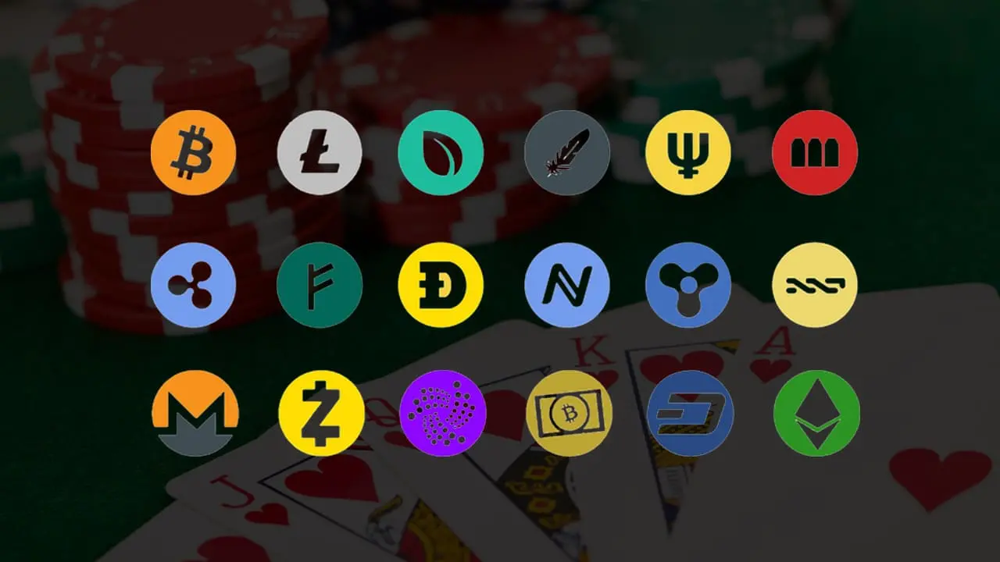
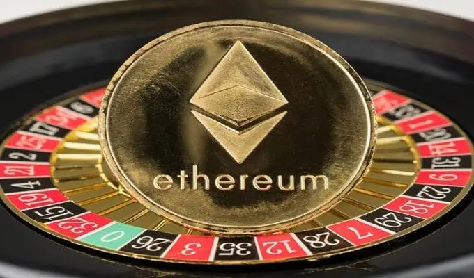
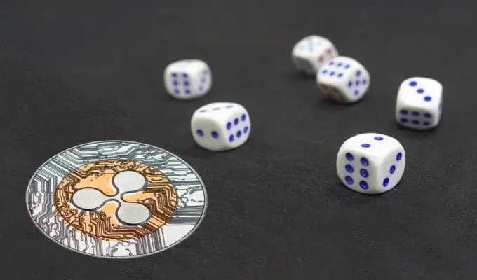
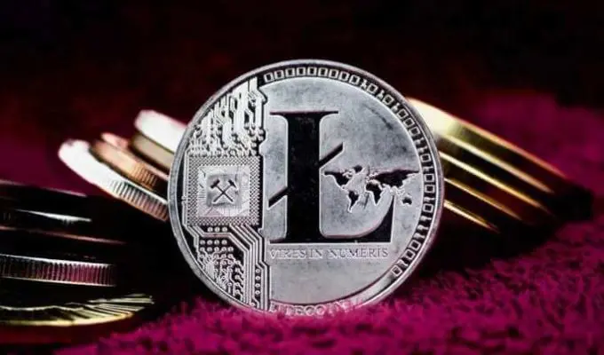

Diese fünf Kryptomünzen werden am häufigsten in einem Online-Krypto-Casino verwendet
Das Spielen in so genannten Krypto-Casinos wie dem Stake Casino wird immer beliebter. Und auch in regulären Online-Casinos gibt es immer häufiger die Möglichkeit, neben den regulären Währungen auch mit Kryptowährungen zu spielen. Aber wer mit Kryptowährungen spielen möchte, entscheidet sich natürlich für ein spezialisiertes Krypto-Casino. In einem Krypto-Casino können Sie nicht nur Kryptomünzen einzahlen, sondern auch mit den Kryptowährungen spielen, die Sie Ihrem Casino-Konto hinzugefügt haben. Wenn Sie zum Beispiel Bitcoins einzahlen, dann spielen Sie auch mit dem Bitcoin . Alles im Casino ist auf das Spielen mit Kryptos ausgerichtet. So erhalten Sie z.B. auch Boni in Form von Kryptowährungen und Gewinne werden einfach in Kryptowährungen ausbezahlt.
Welche Kryptomünzen können sie am meisten und am besten nutzen?
Wenn Sie in einem Krypto-Casino spielen, können Sie oft verschiedene Arten von Kryptowährung verwenden. Das bedeutet jedoch nicht, dass es immer ratsam ist, mit einer beliebigen Kryptowährung zu spielen. Die gängigsten Münzen, die Sie in einem Kryptowährungs-Casino verwenden können, sind Bitcoin, Ethereum, Ripple, Dash und der kleine Bruder von Bitcoin, Litecoin. Im Folgenden können Sie mehr über jede dieser Kryptomünzen lesen.
#1 Bitcoin
Die Münze aller Münzen, wie Bitcoin auch genannt wird . Und das liegt natürlich daran, dass es die erste digitale Währung war, mit der tatsächlich gehandelt wurde. Aufgrund der enormen Popularität und des Wertanstiegs von Bitcoin kamen bald weitere Arten von Kryptomünzen auf den Markt. Heute bestehen etwas mehr als 50 % aller auf dem Kryptomarkt getätigten Transaktionen aus Bitcoin-Transaktionen.
Der Vorteil von Bitcoin ist, dass er sowohl in Crypto Casinos als auch in regulären Online-Casinos akzeptiert wird. Das macht die Wahl des Casinos, in dem man spielen möchte, manchmal sehr viel einfacher. Ein weiterer Vorteil ist, dass es sich nicht um eine „gefährdete“ Kryptowährung handelt. Es besteht eine sehr gute Chance, dass diese digitale Währung in 20 Jahren noch existiert. Und das kann man nicht von jeder Kryptowährung behaupten.
Der Nachteil von Bitcoin ist, dass sich sein Wert sehr sprunghaft entwickelt. An einem Tag kann sein Wert um mehrere tausend Euro steigen oder fallen. Außerdem sind die Bitcoin-Transaktionskosten recht hoch, da es sehr lange dauert, einen Bitcoin zu schürfen.
#2 Ethereum
Diese digitale Währung gehört zu den Spätzündern. Sie kam erst 2015 auf den Markt und verwendet größtenteils die gleiche Technologie wie Bitcoin. Sie lässt sich nur etwas schneller schürfen und der Preis ist etwas weniger schwankend als bei Bitcoin. Der Vorteil von Ethereum ist also, dass es sich um eine relativ stabile Währung handelt.
Ethereum ist auch im Rennen, um eine der wichtigsten Münzen im „Edgeless“-Glücksspiel zu werden. Bei dieser Form des Glücksspiels wird kein Hausvorteil mehr berechnet. Der Nachteil von Ethereum ist, dass sein Preis an Ether gebunden ist. Und davon hat man immer genug, so dass diese Münze wahrscheinlich nie wirklich viel wert sein wird.
#3 Ripple
Ripple ist eine digitale Währung, die im Jahr 2012 auf den Markt kam. Sie verwendet eine völlig eigene Technologie und wurde insbesondere für den Einsatz in internen Netzwerken konzipiert. Stellen Sie sich vor, Sie bezahlen den Kaffee in der Kantine mit dem Gehalt, das Sie mit dem Ripple erhalten. Die gesamte Struktur wurde entwickelt, um dies so schnell wie möglich zu machen. Transaktionen werden daher blitzschnell abgewickelt, was man von vielen anderen Kryptowährungen nicht behaupten kann. Außerdem sind die Kosten für eine Transaktion relativ niedrig, vor allem im Vergleich zu Bitcoin.
Ein Vorteil von Ripple ist, dass Banken und Finanzinstitute es angenommen haben. Es handelt sich also um eine sehr vertrauenswürdige Währung, was sie sehr stark macht. Darüber hinaus ist es aufgrund der verwendeten anomalen Technologie zweifellos eine sehr sichere Währung. Der Nachteil dieser Münze ist, dass sie im Gegensatz zu anderen Kryptomünzen nicht dezentralisiert ist.
#4 Dash
Diese digitale Währung könnte die Zukunft der Casinos bestimmen. Sie ist eine der wenigen Münzen, die wie Ripple Transaktionen blitzschnell abwickeln kann. Und das ist natürlich Wasser auf die Mühlen von Glücksspielern und Casinos. Die Schnittstelle von DASH ist auch viel benutzerfreundlicher als bei anderen Münzen. Leider hat diese Münze eine Einschränkung. Die Größe eines Blocks darf 1 MB nicht überschreiten, wodurch der Dash manchmal weniger verfügbar ist.
#5 Litecoin
Litecoin wurde als Alternative oder Gegenstück zu Bitcoin konzipiert. Der Name sagt eigentlich schon, was das Ziel der Münze war: die Zeit der Transaktionen und damit die Kosten zu reduzieren. Litecoin verwendet genau die gleiche Technologie wie Bitcoin und ist inzwischen fast so beliebt wie sein großer Bruder. Der Vorteil von Litecoin ist, dass er schneller und billiger ist. Ein Nachteil ist jedoch, dass Litecoin immer mehr Züge des großen Bruders Bitcoin aufweist. Es sieht also so aus, als ob Litecoin sehr langsam dem Bitcoin ähneln wird, nur etwas weniger häufig gehandelt wird.
Entscheiden Sie sich vorzugsweise für eine dieser fünf Kryptomünzen
Diese fünf Kryptowährungen sind nicht nur die am weitesten verbreiteten in Online-Casinos, sondern auch die stabilsten Kryptomünzen. Die Wahrscheinlichkeit, dass eine dieser Münzen in ein paar Jahren nicht mehr existiert, ist äußerst gering. Wählen Sie daher vorzugsweise eine dieser fünf Kryptowährungen zum Spielen.